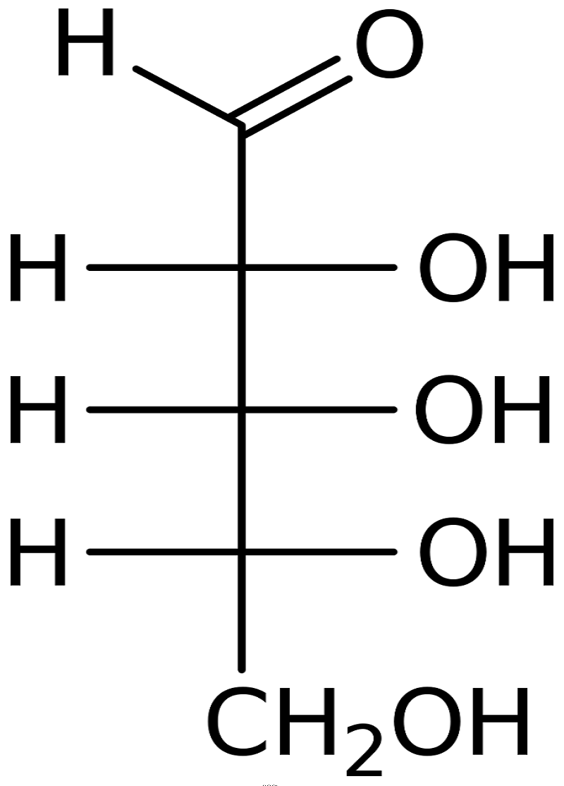
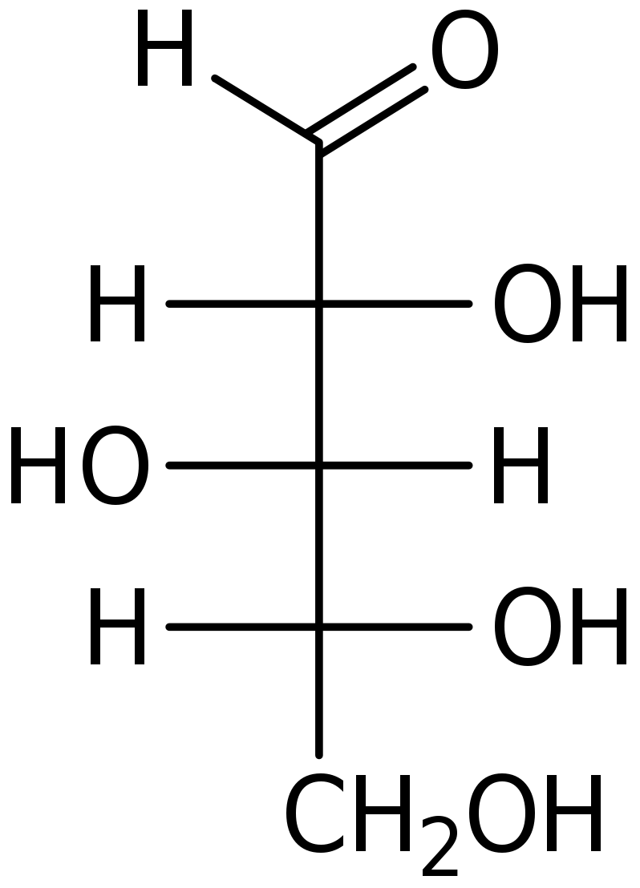

|
|
Las Aldopentosass tienen tres carbonos asimetricos, que determinan la existencia de 8 isomeros posibles (2#C asimetricos).
Carbonos asimétricos
Esferas de Van der Walls
Por defecto se ha cargado en la página la D-Ribosa.
|
| (Representación en 2D de la configuración tetraédrica (3D) de los enlaces sp3 del carbono, relevante para definir la disposición en el espacio de los sustituyentes de un carbono asimétrico. Asumiendo que el carbono está en el plano del dibujo, los enlaces horizontales se proyectan hacia delante del plano y los verticales hacia atrás). | |||||||
 |
 |
||||||